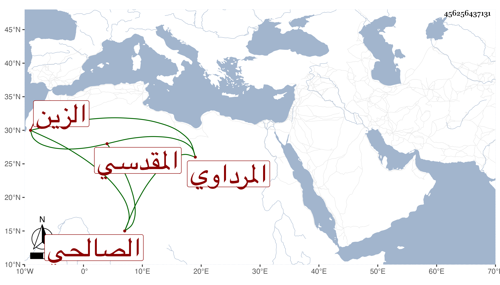

0902Sakhawi.DawLamic.ITO20230111-ara1.EIS1600.456256437131
Biography ID: 456256437131
361
عمر بن محمد بن إبراهيم بن عباس الزين المرداوي المقدسي الصالحي ، سمع في سنة ثلاث وتسعين على الزين عبد الرحمن بن محمد بن الرشيد نسخة أبي مسهر وما معها وعلى عبد الله بن خليل الحرستاني النصف الثاني من الأول من مسند عمار ليعقوب بن شيبة وغيره ، وحدث سمع منه الفضلاء أجاز لي في سنة اثنتين وخمسين ، ومات بعد ذلك رحمه الله .
